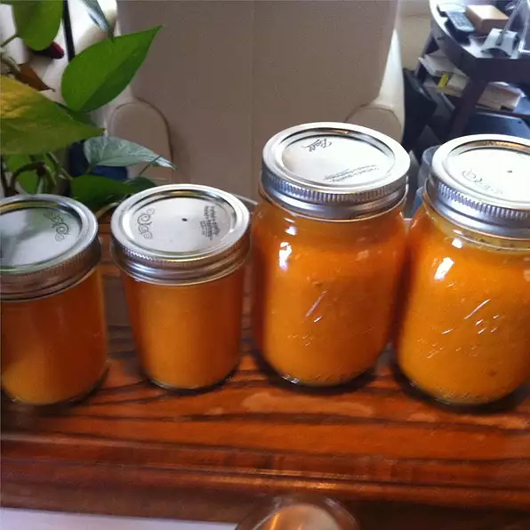

Fermented Hot Sauce

A surprisingly simple, yet delicious, hot sauce that's actually good for you.
This complex hot sauce makes a great addition to many dishes.
The heat of the peppers combines nicely with the sweetness of the fruit
and the acid produced through natural fermentation. It takes some patience,
but the finished product is packed with probiotics and is delicious.
The flavors continue to develop over time.
Ingredients
- 20 habanero peppers
- 1 sweet onion
- 10 cloves of garlic
- 1 orange bell pepper
- 1 ripe mango
- Fine sea salt
Directions
- Roughly chop peppers, onion, and garlic
- Add chopped ingredients to 2 quart mason jars
- Slice mango and remove peel
- Add mango slices to mason jars
- Dissolve 5 tsp fine sea salt in 4 cups of warm water to make brine
- Pour brine over ingredients in jars, filling until all ingredients are submerged
- Use fermentation weights or bags of water to keep ingredients submerged
- Put the lids on the jars loosely - gas will build up during fermentation
- Let the jars sit for 1-2 weeks at room temperature
- Strain the contents, saving the liquid
- Put the strained contents into a blender, adding some of the liquid until desired consitency
- Place hot sauce in whatever containers you like and keep in refrigerator
- Add to any dish to add heat and complexity
Back to Recipes